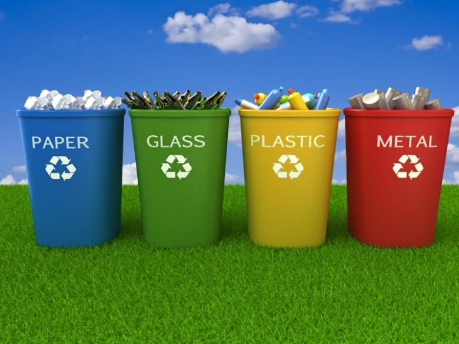

Welcome
Waste disposal are all the activities and actions required to manage waste from its inception to its final disposal. This includes amongst other things collection, transport, treatment and disposal of waste together with monitoring and regulation. It also encompasses the legal and regulatory framework that relates to waste management encompassing guidance on recycling
Waste Types
- Paper
- Glass
- Plastic
- Metal
Image Gallery


About

Now Don't worry about your waste.If you forget it to dispose off.Now You can do it with just the clicks.
Contact
Please Call the toll free Customer Care Service Helpline Number:1800-200-200-1500